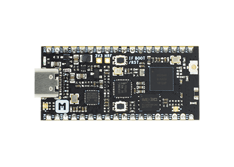
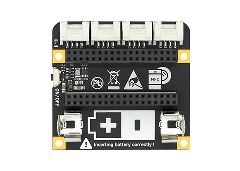
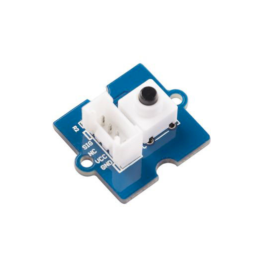
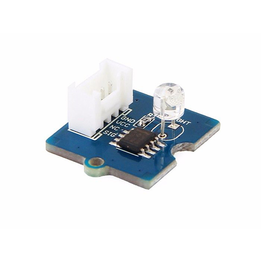
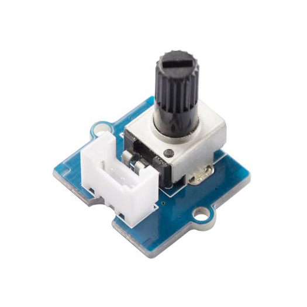
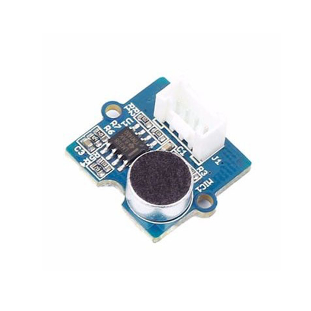
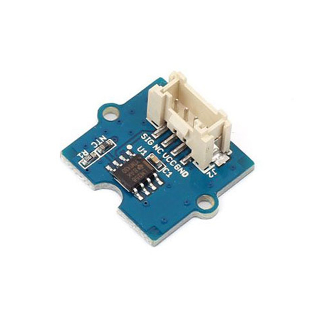
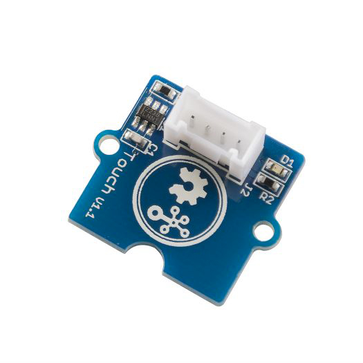

Grove Mesh Kit for nRF52840-MDK
Build Mesh network with nRF52840-MDK and Grove¶
Description¶
Grove Mesh Kit for nRF52840-MDK is a very versatile mesh networking development kit. It integrates nRF52840-MDK development board, Base Dock and SeeedStudio’s most popular and easy-to-use Grove Modules.
Grove Mesh Kit takes a full advantage of the multiprotocol capabilities of the nRF52840 SoC by supporting Bluetooth Mesh and OpenThread Mesh networking. It allows developers to create IoT applications with Mesh Network Connectivity in a very short time.
Features¶
The key features of the Grove Mesh Kit are:
-
nRF52840 Micro Development Kit(nRF52840-MDK)
- nRF52840 Advanced Bluetooth 5, Thread and Zigbee multiprotocol SoC
- Program/Debug options with DAPLink
- Microchip 2-Port USB 2.0 Hi-Speed Hub Controller
- External ultra-low power 64-Mb QSPI FLASH memory
- On-board 2.4G chip antenna
- U.FL connector selectable for external antenna
- Reversible USB 3.1 Type-C Connector
- Buttons and LEDs for user interaction
- Up to 24 GPIOs available via headers
-
Base Dock (Grove Compatible)
- Dual 2x18 Socket Headers
- 4 Grove connectors with UART/I2C/I2S/PDM/QDEC/SPI/ADC selectable
- Supporting NFC-A Listen Mode with PCB NFC Antenna
- AA Battery power supply
- Power Button with Latching Circuit
- Battery level sensing
-
6 easy-to-use Grove modules
- Grove - Button
- Grove - Light Sensor
- Grove - Rotary Angle Sensor
- Grove - Sound Sensor
- Grove - Temperature Sensor
- Grove - Touch Sensor
Block Diagram¶

{kind=link}
Included in the Box¶
| nRF52840 Micro Development Kit | Base Dock (Grove Compatible) |
|---|---|
|  |  |
| Grove Modules | ||
|---|---|---|
|  Grove - Button |
 Grove - Light Sensor |
 Grove - Rotary Angle Sensor |
|  Grove - Sound Sensor |
 Grove - Temperature Sensor |
 Grove - Touch Sensor |
Tutorials¶
We think the best way to learn is by doing. And to help you get started, we have provided a series of tutorials. Find the details below.
- Getting Started with Grove Mesh Kit
- Grove Mesh Kit with nRF5 SDK
- Bluetooth Mesh Networking
- OpenThread Mesh Networking
Create an Issue¶
Interested in contributing to this project? Want to report a bug? Feel free to click here: